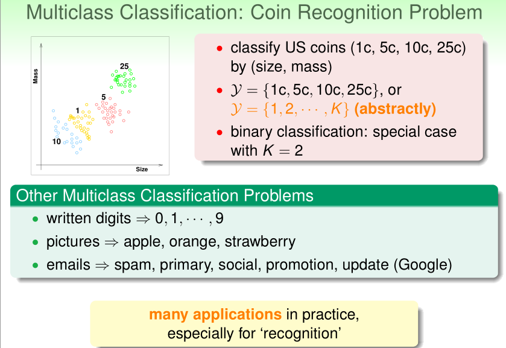

Learning with Different Output Space
根据输出空间来分，通常可以划分为分类（classicfication）与回归（regression）两大类，其中分类通常又可以分为二分类与多分类。除此之外，还有结构化学习，这里一类型的输出数据之间存在着结构化的关系（如语音->句子等）。
对于区分是与否的问题，通常称为binary Classification（二元分类），后面各种复杂的分类，都是基于二分类展开。
0x01_多元分类

区分美国硬币，共有四种2c，5c，10c，25c，该问题是一个四分类，由此可泛化为K分类，二分类是其中特殊的一种。
多分类的常见应用多为“识别”，如图像识别，人脸识别，医疗图像识别等。
0x02_回归，结构化学习
有界回归（bounded regression），在统计学中是一个很经典的问题。
$\mathcal{Y}=\mathbb{R}$ or $\mathcal{Y}=[lower,upper] \subset \mathbb{R}$
bounded regression——deeply studied in statistics
其他回归类的问题有：
- 公司数据=》股票价格
- 气候数据=》预测温度
特点为输入一系列数据，然后输出一个实数。
线性回归已经较为成熟，有许多线程的工具，也可用于构建其他更加复杂的算法。
结构化学习（Structured Learning）：使用机器学习对一个句子里的词性进行分类，表面看是一个多分类问题，但实际上每个单词可能有多个不同的词性，此时进行识别较为困难。但若是将整个句子送进去，从总体来看，就有一定的语法结构可循，属于多分类的一种扩展。
以上两种学习都是从二分类，多分类延伸而来，都是希望机器能学到输出空间中的某种结构。
Learning with Different Data Label yn
根据样本来分，可分为监督学习（supervised），无监督学习（unsupervised）和半监督学习（semi-supervised）以及强化学习（Reinforcement Learning），其中强化学习对样本依赖较少，而且是通过奖惩制度来训练。
监督式学习（Supervised），有确定的的期望输出$y$，结合带有label的一组输入，求得目标函数。比如多分类区分1c，5c，10c，25c的硬币。
非监督式学习（Unsupervised），目标较为分散，并不给一个具体的目标，也没有相应的label，让机器自己去找出某种关联。
典型的几个应用：
- 分群：$\left{\mathbf{x}_{n}\right} \Rightarrow$ cluster $(\mathbf{x})$，可以大致看为“非监督式的多分类问题”，比如自动的将文章分类为多个主题。
- 密度估计：$\left{\mathbf{x}_{n}\right} \Rightarrow$ density $(\mathbf{x})$,可以大致当做“非监督式的有界回归”，比如通过多个路口的交通报告，确定哪些区域的交通事故较多。
- 异常值检测：比如网络流量的资料，某几个点比较奇怪（如DOS攻击，或者服务器状态不正常），那么机器会自动的从中找出来。
非监督式学习有很多地方会对应到监督式里的一些概念。
半监督式学习（Semi-supervised）：介于监督式与无监督式学习之间，通常是只对部分样本打上label及确定期望输出，然后让机器进行学习，适用于在打标签很“昂贵”的情况。
强化学习（Reinforcement）：有隐式的目标${y}_{n}$，但不会明确提出来，而是通过奖惩机制告诉机器好坏，让其一步一步学习。比如：
- 输入（用户，广告选择，用户点击获取收入）=》从而训练广告系统
- 训练游戏AI

对比几种学习的区别：
其中无监督，半监督及强化学习，都是从监督式学习中演变出来的。
Learning with Different Protocol f ⇒ (xn , yn )
训练时数据的输入方式，根据数据是否一次性送入到模型中训练将其分为 batch learning 和 online learning以及active learning。
batch方式，通过喂给机器批量的数据进行学习，如通过输入给机器一批数据，标识出其中的垃圾邮件，让机器自己学会区分。
online方式：会持续不断接收进来的数据，根据资料再不断地更新$g$以提升算法表现。
以垃圾邮件为例，在当前已有算法${g}{t}(\mathbf{x}{t})$的前提下：
- 接收到一个邮件$\mathbf{x}_{t}$
- 使用当前算法${g}{t}(\mathbf{x}{t})$判断是否为垃圾邮件
- 从用户那里接收期望的输出标签$y_{t}$（如用户认为这是或者不是垃圾邮件），并根据($\mathbf{x}{t},\mathbf{y}{t}$)更新算法${g}_{t}$
由此可见，online是一个不断更新自己的方式，所以PLA可以很容易的应用到上面。
online learing也不是每接收一个样本就立刻进行训练更新，而是往往等到积累一批数据后在进行训练更新。
强化学习也是持续不断的更新自己，经常也以online方式。
active方式：通过少量label然后机器学习，当机器无法确认分类时，主动询问$f$（代指人），从而不断地提升$g$的表现，属于半监督学习的一种。
相比batch（填鸭式），online（被动接收）方式，active会去主动地获取目标$y_n$进行学习。
Learning with Different Protocol $f ⇒ (x_n ,y_n )$：
- batch方式是通过所有已知的data进行学习；
- online方式使用持续不断输入的data；
- active方式通过有技巧性的获取data；
- … and more！
Learning with Different Input Space X
根据输入的样本的特征来分也可以分为三类：Input features，raw feaures 和 abstract features。
输入特征（Input features，concrete features）：样本$\mathcal{X} \subseteq \mathbb{R}^{d}$的各项维度，都代表了准确，相关的物理意义。
通常输入特征都包含了一些人类智能指定的信息，从ML的家度来看，是属于比较简单的一些东西。
原始特征（Raw Features）：对象自身带有的一些特性，只带有一些简单的物理意义。
以数字识别为例，比如下列图片每个数字都是由16X16的像素点组成的：
如果不做任何处理，只看原始数据，那么此时的raw feature就是这样：16 by 16 gray image：$x≡ (0,0,0.9,0.6,···) \epsilon \mathcal{R}^{256}$。
此时每个样本就是一个256维度的向量。每个维度的物理意义只是代表某个点，而判断数字并不是靠某一个点，而是要结合其他的点，到底有没有点等等的关系，对于ML来说会是一个很复杂的问题。
若加上人类的一些认知，对其进行一些处理，比如数字可能有是否对称，笔画密度如何等。比如1是比较对称的，5是笔画密度较稠密的，根据这点将数字1和5转为为一个二维平面图，y轴代表对称程度，x轴代表密度：
那么此时就是一个二维的向量，对于ML来说会容易很多。
抽象特征（Abstract Features）：从raw feature更加抽象，且每个维度并没有太具体的物理意义，对于ML来说更加困难。
比如用户对音乐进行打分： (userid, itemid, rating) ，使用这个抽象特征，由此预测出哪些用户会对哪些歌曲给出多少评分。（类似的例子还有学生习题系统，广告在线投放等）
对于上述的抽象特征，我们需要帮助每个使用者抽取出真正的feature，比如对歌曲的喜好程度的向量，歌曲曲风的向量，作曲家的向量等等，这些也需要由人或者机器（跟raw feature）一样去做预处理。
个人的理解：其实上述提到的Raw feature，Abstract feature就有点分别对应于推荐系统中的维度表以及事实表一样。
对于机器来说，越抽象的数据（如多维）就困难，往往需要我们对原始数据（raw data）或者抽象数据（abstract data）做一个特征工程（feature engineer），经过预处理后的数据再喂给机器。
特征工程往往能觉得一个机器学习的生死，特征工程可能由人完成（比如手动打标签，过滤，清洗等），也可能由机器自己完成（如深度学习）。